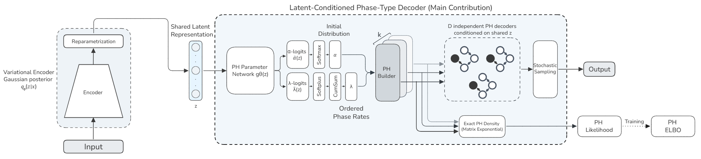
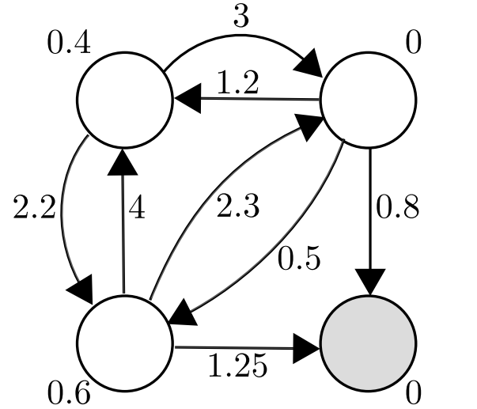
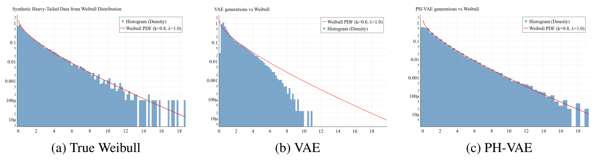

PH-VAE: Phase-Type Variational Autoencoder for Modeling Heavy-Tailed Distributions
Summary
Data appear across finance, insurance, language, networks, and many risk-sensitive domains, where rare but extreme events dominate uncertainty. Standard VAEs usually rely on Gaussian decoder likelihoods, which tend to underestimate tails and collapse extreme values.
We propose PH-VAE, a Phase-Type Variational Autoencoder that replaces the classical decoder with a latent-conditioned Phase-Type distribution, defined through the absorption time of a continuous-time Markov chain. This decoder composes multiple exponential time scales, giving the model a flexible and analytically tractable way to learn diverse tail behaviors directly from data.
Empirically, PH-VAE outperforms Gaussian, Student-t, and extreme-value-based VAE decoders on synthetic and real-world heavy-tailed benchmarks, improving tail fidelity, extreme quantile estimation, and multivariate tail dependence through a shared latent representation.
Methodology

PH-VAE follows the standard Variational Autoencoder framework, where an encoder maps input data to a latent variable and a decoder reconstructs the observation from this latent space. Unlike classical VAEs that assume a simple Gaussian likelihood, PH-VAE introduces a more expressive observation model by conditioning the decoder on the latent variable to generate flexible distributions. The model is trained by maximizing the Evidence Lower Bound (ELBO), balancing reconstruction accuracy with latent regularization.

The key innovation lies in the use of Phase-Type distributions as the decoder likelihood. Each data dimension is modeled as the absorption time of a continuous-time Markov chain, allowing the model to represent complex, heavy-tailed behaviors through a composition of exponential time scales. This design enables PH-VAE to accurately capture both typical values and extreme events, while dependencies between variables are naturally induced through the shared latent representation.
Results
We evaluate PH-VAE on synthetic datasets with known heavy-tailed distributions and real-world benchmarks from finance and insurance. PH-VAE consistently outperforms Gaussian, Student-t, and extreme-value-based VAE decoders in terms of tail fidelity, extreme quantile estimation, and multivariate tail dependence. The results demonstrate that PH-VAE can effectively learn complex tail behaviors while maintaining a compact latent representation.

Citation
@misc{ziani2026phasetypevariationalautoencodersheavytailed,
title={Phase-Type Variational Autoencoders for Heavy-Tailed Data},
author={Abdelhakim Ziani and András Horváth and Paolo Ballarini},
year={2026},
eprint={2603.01800},
archivePrefix={arXiv},
primaryClass={cs.LG},
url={https://arxiv.org/abs/2603.01800},
}
Contact
For questions about this work, please contact: hakim.ziani@centralesupelec.fr